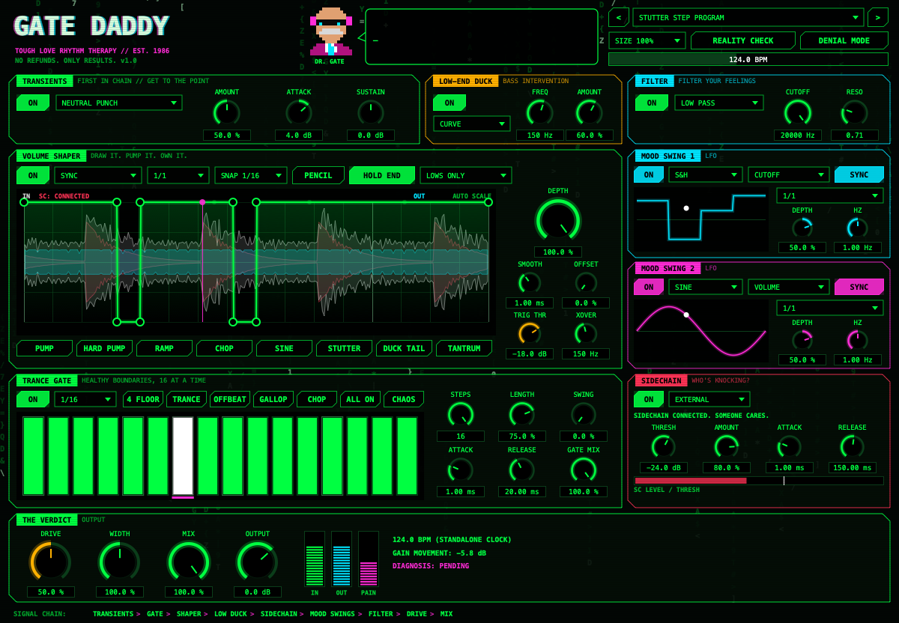

Trance gate, drawable volume shaper, sidechain ducking, transient shaper, low-end duck, two LFOs and a filter, all in one plugin. This guide gets it into Ableton in about 5 minutes.
| FILE | WHAT IT IS |
|---|---|
| Install Gate Daddy 1.0.0.pkg | The installer. Puts the VST3, the Audio Unit and a standalone app on your Mac. |
| Gate Daddy – Install Guide.pdf | This guide. |
Open your Downloads folder and double-click the .zip. A folder appears containing the installer and this guide.
Save and quit Live completely (⌘Q). Plugins can't be installed while Live has them loaded.
Double-click Install Gate Daddy 1.0.0.pkg. Because this is an independent plugin (not from the App Store), macOS will most likely stop it the first time:
Control-click (or right-click) the .pkg → Open → Open.

| MODULE | WHAT IT DOES |
|---|---|
| TRANCE GATE | 16-step gate. Pick the rate (1/4 down to 1/64, including triplets and dotted). Click steps on/off, Alt-drag to set step volume. Buttons: 4 FLOOR, TRANCE, OFFBEAT, GALLOP, CHOP, ALL ON, CHAOS. Knobs: steps, length, swing, attack, release, mix. |
| VOLUME SHAPER | Draw a volume curve. Click to add a point, drag to move it, double-click to delete it, and drag the pink diamonds to bend the curve. Right-click for invert/reverse/double. Modes: SYNC, FREE HZ, INPUT TRIG, SC TRIG. BAND lets you shape only the lows or only the highs. |
| TRANSIENTS | Punch up or soften the front of each hit (Attack) and the tail (Sustain). Runs first in the chain. |
| LOW-END DUCK | Ducks only the bass below FREQ, following the curve or the sidechain. Fixes kick/bass fights. |
| MOOD SWING 1 & 2 | LFOs that modulate cutoff, resonance, pan, volume, drive or width. Sync to tempo or run free. |
| FILTER / THE VERDICT | Low/high/band-pass filter, drive, stereo width, dry/wet mix, output, and the PAIN meter (how hard it's turning you down). |
| REALITY CHECK | Randomizes the curve, the gate pattern and the rates. Press until it slaps. |
| DENIAL MODE | Bypass. For before/after comparisons (or denial). |
Hover over any knob for a tooltip. Click Dr. Gate for a fresh diagnosis.
Gate Daddy checks for new versions when you open it. When one is out, an orange UPDATE vX.X.X button appears next to the logo and Dr. Gate lets you know. Click it, run the new installer the same way, and restart Ableton.
| PROBLEM | FIX |
|---|---|
| It doesn't show up in Ableton | Check step 5: both switches on, then hold Option and click Rescan. Restart Live if needed. |
| Installer says it can't be opened | Follow step 3: System Settings → Privacy & Security → Open Anyway. |
| “SC: NOT ROUTED” | Redo step 7. Pick the kick track in Audio From on the Ableton device, not inside the plugin window. |
| Gate/shaper not moving | Make sure the module's ON button is lit and DENIAL MODE is off. It follows Live's tempo automatically. |
| No sound in the standalone app | Options → Audio/MIDI Settings, pick your audio interface, click Unmute on the input (use headphones). Set the tempo with the BPM bar at the top. |
| Uninstall | Delete:/Library/Audio/Plug-Ins/VST3/Gate Daddy.vst3/Library/Audio/Plug-Ins/Components/Gate Daddy.component/Applications/Gate Daddy.app |